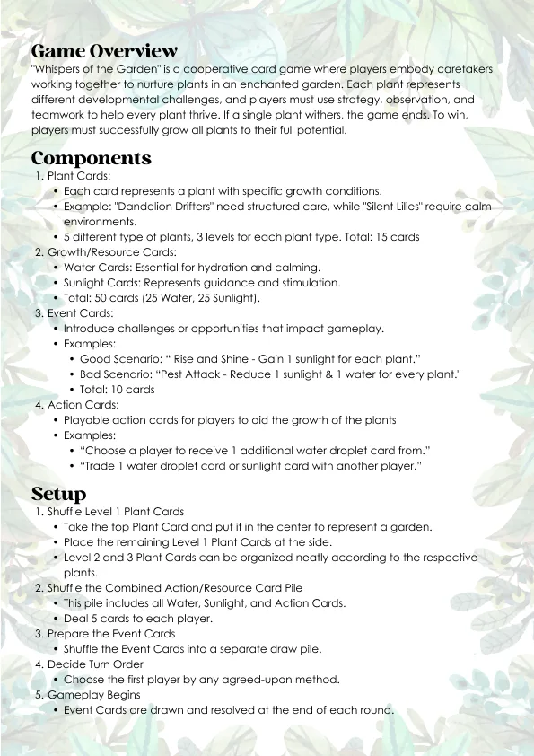
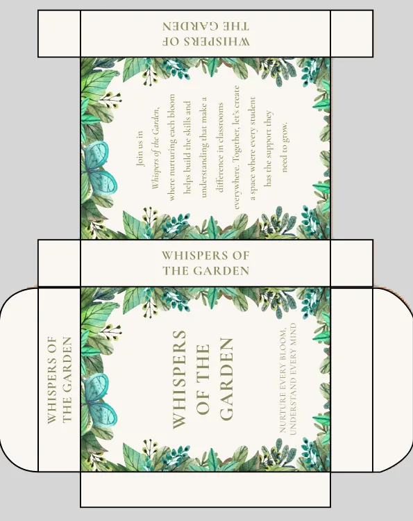

01 · The idea
Nobody wins unless every plant grows.
Players care for an enchanted garden. Each plant has different needs, and if one plant withers, everyone loses, so the whole table has to work together.
It’s built for early childhood educators. Each plant stands in for a child with different needs, making the game a low-stakes way to practise a classroom: sharing limited resources, giving individual support and adapting when things go wrong.
02 · Research & testing
We started with the people in the classroom.
Our team, Walnut Studios, spoke to early childhood educators and trainees. They struggled to adapt when an intervention wasn’t working, to spot developmental differences, and to stay calm in hard moments. They asked for collaborative games and real scenarios where choices lead to different outcomes.
“A real-life scenario would be good as it would let us know what choices we make would lead to different outcomes.”
That shaped our persona, Emma, a final-year early education student on attachment at a childcare centre, and our question:
How might we
provide early childhood educators with a tangible understanding of how psychological interventions can positively make a difference in children’s lives?
What testing changed
In paper prototype tests, players said it felt like nurturing students, but the characters were “quite boring”, some cards were unclear and the goal felt repetitive. So each plant got its own dialogue and abilities, events became more random, and action cards got clearer.
03 · The plants
Five plants, each with their own needs.
Each plant gently represents a condition, such as ADHD, autism, OCD or social anxiety. The Brightburst Sunflower bursts with energy; the Zone Out Lily focuses deeply on one thing.
Every plant asks the same thing in its own voice: “please be patient with me.” 5 plants, 3 growth levels each, and each ends up immune to a different hazard.

04 · How it plays
Water, sunlight and a bit of weather.
Players share water (calm) and sunlight (guidance) cards to level plants up. Action cards let them trade, protect plants or double a resource.
Each round ends with an event: a hurricane, a drought, or a sunny “Rise & Shine”. Too much or too little of anything sets a plant back, just like real care.

Rulebook
Printable box05 · The look
Soft, warm and never scary.
For a young audience: watercolours, rounded cards, calm greens. Plants have friendly faces so children see characters, not labels. I generated the illustrations with AI and designed every card, layout and printable around them.
06 · Trade-offs
The calls I made, and what they cost.
Designing about neurodivergent children meant every choice had to be gentle as well as fun.
Compete or cooperate?
Fully cooperative (chosen)
Everyone wins or loses together, so the game rewards patience and helping, not beating each other.
Competitive (not chosen)
More tension, but it would work against the message of the game.
How should the conditions appear?
Plants with faces and their own needs (chosen)
Children connect with characters, and the condition is a need to care for, not a label.
Name the conditions on the cards (not chosen)
Clearer for adults, but it risks turning a child into a diagnosis.
How should the art be made?
AI watercolours, prompted as a series (chosen)
35 consistent illustrations in about a week, kept steady by prompts like “based on the baby cactus style”.
Draw everything by hand (not chosen)
More personal, but not possible in the project time with this many cards.
What worked
- Cooperative play made the whole table talk about what each plant needs.
- Prompting as a series kept 35 illustrations looking like one set.
What I’d change
- Test the plant–condition pairings with special needs educators and parents, not just trainees.
- Paint the key plants myself and use AI only for backgrounds.
07 · Final presentation
The deck we presented.
Our final module presentation: research, persona, problem, ideation, prototyping, testing and the final cards.